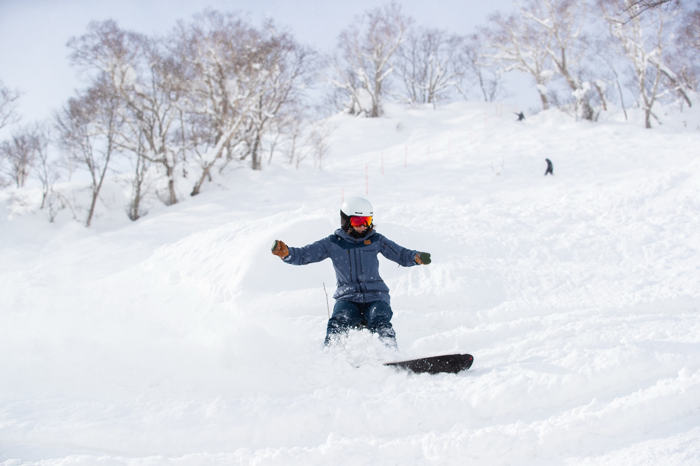
You've been invited to interview with Far East Snowsports. This pack covers the role, what you would earn, and the practicalities of a season with us. Read it before we meet — the interview works better when you arrive with a clear picture of how we operate.
Far East Snowsports (FES) was established in 2015 in Niseko, Hokkaido. We are a boutique snowsports school built around individually curated guest experiences and the belief that snowsports instruction should be a real, sustainable profession.
As AI continues to reshape the global workforce, human interaction — the kind that happens on a mountain, between a skilled instructor and a curious guest — will only become more valued. Snowsports lessons are not something that can be automated. FES is committed to building the structure, systems, and culture that allow career instructors to lead that future with credibility and confidence.
We think in decades, not seasons. Our ambition is to help shape what the snowsports industry looks like over the next 100 years — and that starts with treating instruction as a long-term career, not a one-winter detour. Everything we've built — OBP, the Support Programme, the Loyalty Programme, the path from Junior to Full Member — is designed so that the value of being part of FES compounds the longer you stay. A first season at FES is valuable. A second, third, fifth, and tenth season are exponentially more so.
FES is also the team behind Stivot (a snowsports school management software) and the Adventure Map — both built from our own operational experience in Niseko.
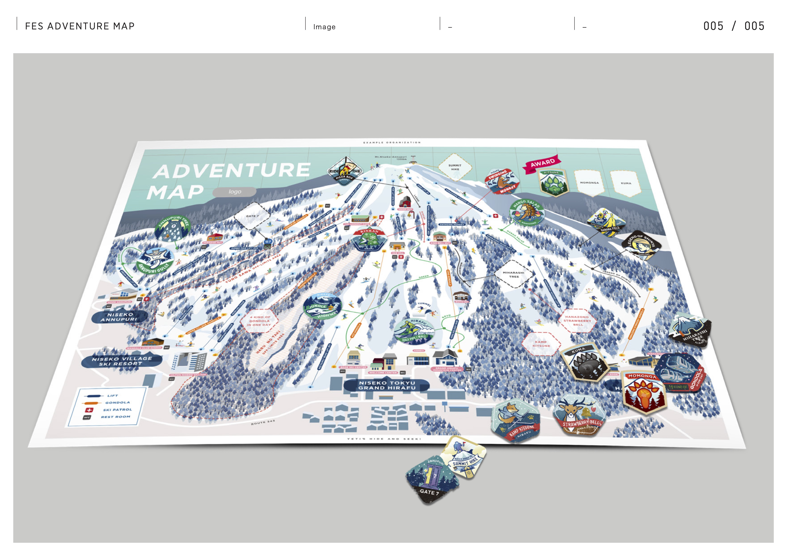
The FES Adventure Map — our illustrated guide to Niseko, with collectible sticker challenges
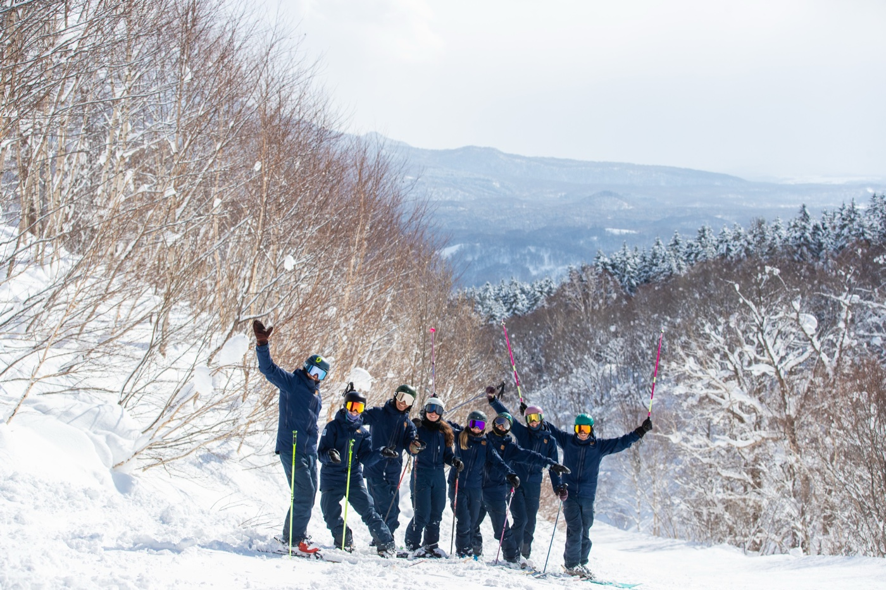
The FES team — 25/26 season, Niseko
Every new member at FES starts as a Junior Member. This is an outsourcing contract — you are an independent contractor, not an employee.
Contract period: Late November to mid-April
Being a Junior Member isn't a junior position in a hierarchy. Within our team, every member is a mentor in some areas and a mentee in others — and that holds whether you're in your first season or your tenth. The Junior Member range itself is wide: some members are early in their career and lean more on being mentored, while others arrive with seasons behind them and end up mentoring more than they're mentored.
What matters most — especially for Junior Members — is the mindset that holds both at once: confident enough to contribute, open enough to keep learning. Once that mindset shows up consistently, alongside the operational efficiency we expect from a Full Member, you'll be invited to step up. For some, that comes in their second season; for others, it takes many years. Where you start shapes the length of the path, not the value of being here.
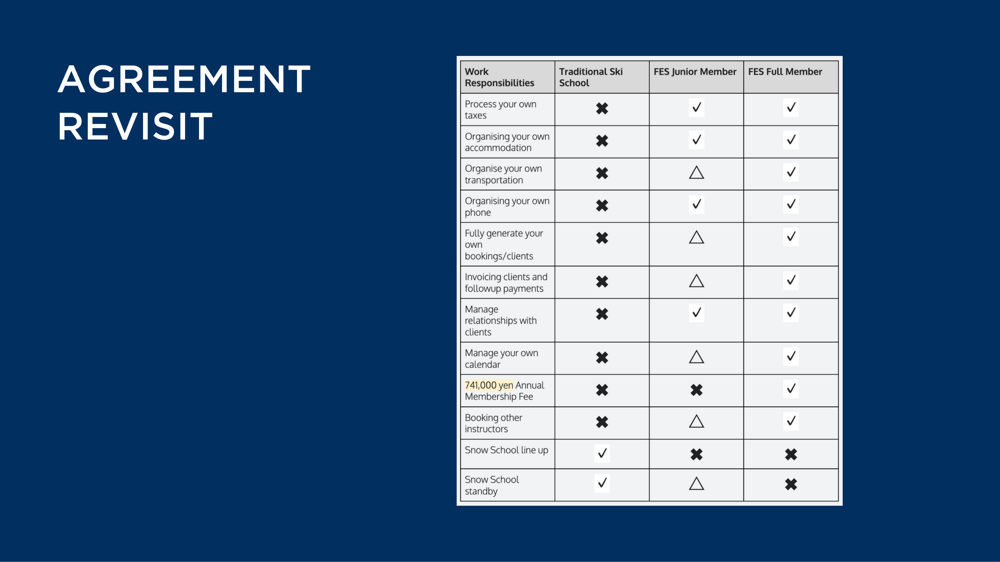
How FES Junior and Full membership compares to a conventional ski school role
All rates are approximate and tax-inclusive. Exact amounts vary depending on agent fees and credit card processing costs — typically within ±5% of the stated rates.
At most schools, your rate is set by your certification level or years of experience. At FES, we don't think that's the right measure. The most direct indicator of the value you create is whether guests choose to return to you — or refer others to you. Returning clients are earned, not assigned. That is what we reward.
You have an account in our management system (Stivot). When a guest returns to you or you bring in a new client, you communicate with them directly — agree dates, products, pricing. You create the invoice and send it to them. The client pays. You deliver the lesson. You receive ~55% of what is charged. This is available from your very first day if you have clients coming to you.
Blended rate example: 50 working days, all assigned = ~35%. 25 days assigned + 25 days OBP = approximately ~45% average.
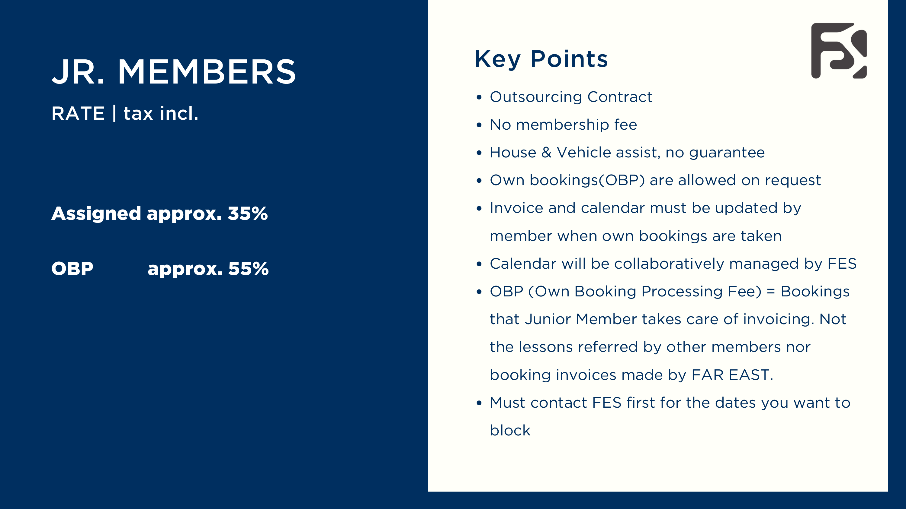
Junior Member rate structure — 25/26 season
| Item | Detail |
|---|---|
| Commission rate | 20% |
| Commission cap (25/26) | ¥730,000/season |
| Annual membership fee | ¥741,000 |
| Fee breakdown | ¥74,800 system royalties + ¥280,000 non-refundable commission (~12 lesson days) + ¥386,200 lift pass |
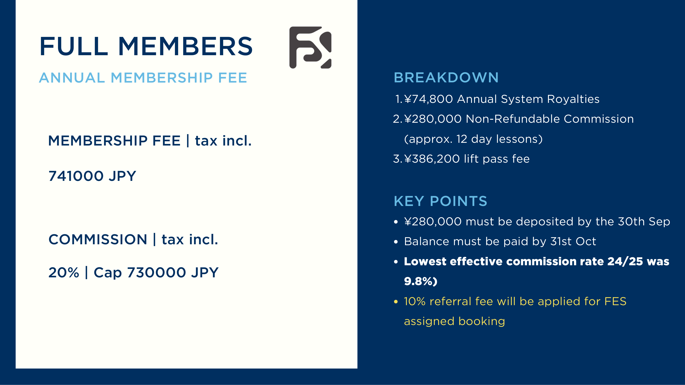
Full Member rate structure — 25/26 season
If you refer a booking to any FES member — Junior or Full: 10% commission paid to you, provided you process the invoice and follow through with payments.
One of the most common questions from candidates: how many days will I actually work? The honest answer is that it varies significantly — and it is partly in your control.
Assigned days depend on bookings received, weather, and team scheduling. FES does not guarantee a minimum number of working days per season. A typical first-season Junior Member works between 40–70 assigned days (in full-day equivalents), though reality is more nuanced. Roughly half of all lessons are half-days — so the actual number of times you go out to teach is closer to 60–90 individual sessions across the season.
Chinese New Year (Spring Festival) is a lunar holiday — the date shifts each year, typically falling between late January and mid-February. For FES, it is one of the most significant demand drivers of the season. The two weeks surrounding CNY generate a sustained surge in bookings from mainland Chinese, Hong Kong, Singaporean, and broader Asian guests.
The pattern: there is usually a dip in early January after the New Year holiday noise clears and before CNY demand builds. Then a sharp peak as CNY week arrives. Then another dip immediately after — often the quietest week of the mid-season. Australian school holiday bookings then bridge into the second half of February.
Season-to-season income fluctuates significantly and doesn't follow a clean curve. March can be quiet one year and unexpectedly busy the next. Snowfall timing affects December entirely. CNY demand can shift two to three weeks depending on the lunar calendar. Plan conservatively and treat any upside as a bonus, not a baseline.
OBP supplements assigned work. If you have returning guests or generate your own bookings, OBP sits on top of your assigned days and is available from day one. Members with strong OBP networks can meaningfully increase both their total working sessions and their effective rate.
Pay periods: Bookings close at the end of each calendar month. Payment is made on the 15th of the following month — so your first payout (for December lessons) arrives on 15 January. Note that a booking's end date determines which pay period it belongs to: a lesson that starts in December but ends in January is counted as January billing and paid on 15 February. Factor this into your buffer planning.
| Booking source | Commission rate | Typical first-season share |
|---|---|---|
| FES Assign | approx. 35% | approx. 72% of gross |
| Internal Referral | approx. 35% | approx. 8% of gross |
| Web | approx. 35% | approx. 2% of gross |
| OBP (Own Booking Process) | approx. 55% | approx. 7% of gross |
Growing your OBP proportion is the single most effective lever for increasing your earnings rate. A scenario with 40% OBP on the same gross billing would add approximately ¥290,000 to your season earnings.
There is no fixed timeline and no fixed criteria checklist. Almost all new members start as a Junior Member — not as a trial, but because building a track record within FES is how we maintain our standard. In rare cases, an instructor with an exceptional professional background — such as a national demo team member or a widely recognised high-profile professional — may be considered for Full Member from the outset. This is the exception, not the rule. Some members transition to Full Member the season after their first. Some take five years. It genuinely depends on the individual.
The size of your client base is one factor, but it is not the only one. We also look at:
Junior Members who reach 50 full working days and return the following season become eligible for equipment support (see Support Programme).
The chart below is built from real Stivot billing data across 5 Junior Members who were new to Niseko, over up to three seasons. It shows the single most important pattern in a multi-season FES career: school-assigned work stays roughly flat, while your own client bookings (OBP) compound year on year. By Year 3, OBP accounts for nearly half of total billing — and it is the only part that keeps growing.
| Year | Avg gross billing | School-assigned | Own clients (OBP) | OBP share | Avg earnings | Effective rate |
|---|---|---|---|---|---|---|
| Year 1 | ¥4.42M | ¥4.12M | ¥0.30M | 7% | ¥1.61M | 36.4% |
| Year 2 | ¥5.47M | ¥4.17M | ¥1.29M | 24% | ¥2.17M | 39.7% |
| Year 3 * | ¥6.33M | ¥4.14M | ¥2.19M | 35% | ¥2.65M | 41.9% |
* Year 1 & 2: n=5 members. Year 3: n=3 members (not all have completed three seasons). OBP split read from Stivot sales-by-source data. Earnings = commission income from FES (35% on school-assigned work, 55% on OBP) — before personal income tax, tax return costs, and business expenses.
Based on a lesson rate of ¥100,000–¥115,000 per full day and roughly equal numbers of full-day and half-day sessions. Half-day sessions make up approximately half of all bookings by count — meaning you go out to teach significantly more times than a simple "days worked" figure suggests.
| Year | Full-day sessions | Half-day sessions | Total sessions | Full-day equivalents |
|---|---|---|---|---|
| Year 1 | 27 days | 27 days | 54 days | ~40 days |
| Year 2 | 34 days | 34 days | 68 days | ~51 days |
| Year 3 * | 39 days | 39 days | 78 days | ~59 days |
* Estimated from average gross billing at ¥107,500/full-day and ¥55,000/half-day. Full-day equivalents = (FD × 1 + HD × 0.5). Actual numbers vary with lesson type, group size, and private vs group rates.
FES offers guiding services — accompanying guests outside the resort gates into Niseko's wider backcountry terrain. Guiding is not a standard part of every member's season. It is a pathway for members who build the experience, qualifications, and internal track record to earn it.
The assessment covers decision-making and risk management, Niseko-specific terrain knowledge, guest handling, and safety protocol. It is rigorous by design — we take this seriously because the environment is serious.
If guiding is part of why you're interested in FES, raise it in your interview. It helps us assess fit and start tracking your progression from the beginning.
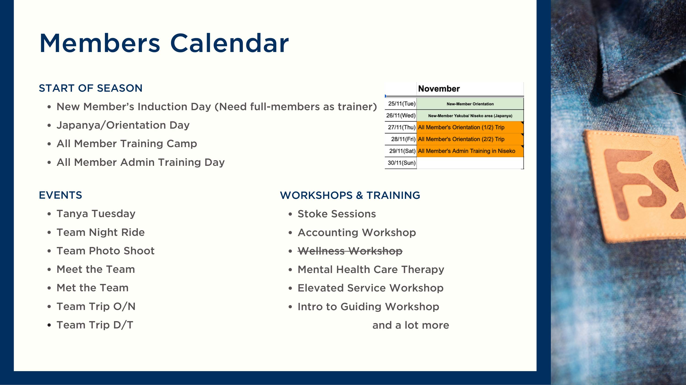
Season calendar — events, workshops, and training throughout the season
You are not required to do consecutive seasons. Many members take time to travel or work elsewhere between winters and return to FES the following season.
Niseko is a ski region built around winter tourism. The infrastructure is good for its size, but the area is a collection of small mountain towns — not a city.
Where FES members live: FES members are spread across Kutchan, Niseko Town, and the Rankoshi/Yunosato area. The majority of FES staff housing is located in Kutchan. Hirafu is where most guests stay and where the in-season nightlife sits, but very few FES members live there.
For first-season Junior Members new to Niseko, FES will in most cases help source accommodation. The more seasons a member has spent in the area, the more we expect them to manage this independently — they'll have built their own networks and familiarity with the local rental market. Support reduces over time.
Typical setup: Shared house, 3–4 people, 3 bedrooms, shared kitchen and bathroom.
| Item | Cost |
|---|---|
| Rent (per room, shared) | approx. ¥85,000/month |
| Utilities | approx. ¥20,000–30,000/month |
| Snow clearing | approx. ¥200,000 total for the season, split across all residents |
If you source your own accommodation independently, FES subsidises 1/3 of your monthly rent, up to ¥20,000/month. This applies to independently arranged accommodation only, not FES-sourced housing.
If your partner also works for FES, you share a room in staff housing. If your partner does not work for FES, FES members get priority for staff housing. Niseko can be difficult to navigate without a car — no driver's licence is a practical challenge, particularly outside central Hirafu.
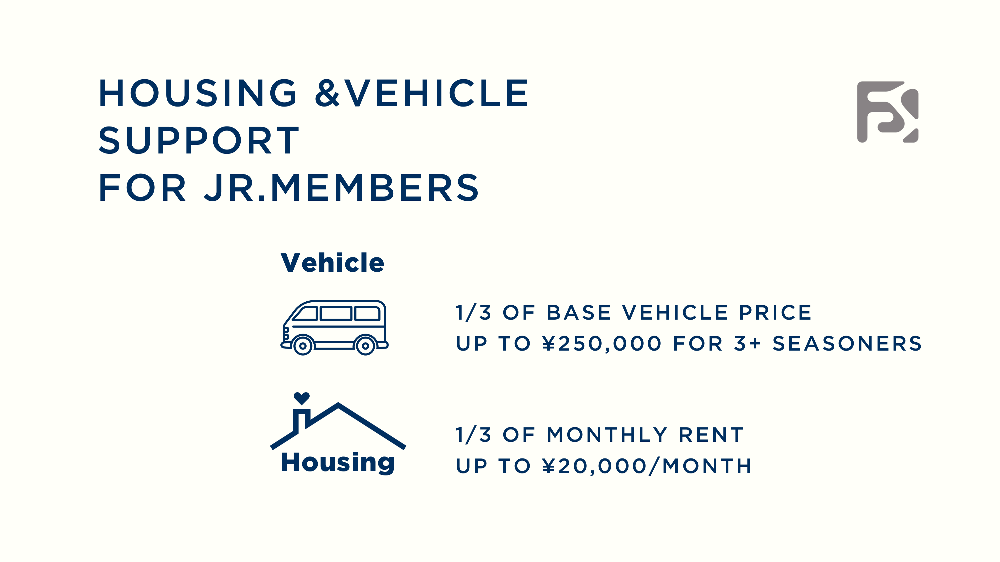
Housing & Vehicle support for Junior Members
Junior Members have access to FES vehicles throughout the season.
| Use type | Cost |
|---|---|
| Work days | ¥3,500/day — see how this is calculated |
| Private use within Niseko Area | No charge |
| Private use outside Niseko Area | Approval required — no charge |
| Fuel | Always paid by the member |
For Junior Members with 3+ seasons at FES: FES contributes 1/3 of the base vehicle purchase price, up to ¥250,000 toward your own vehicle.
| Coverage | Status |
|---|---|
| Third-party liability | ✓ Covered by FES |
| Guest injury | ✓ Covered by FES |
| Your personal injury treatment | ✓ ~90% covered by FES insurance |
| Freelance worker's compensation | Optional — ~¥3,000/month; FES covers half if you choose to enrol |
| Vehicle (work-related) | ✓ Covered by FES |
| Japanese national health insurance | ✓ Mandatory for all residents — you pay 30% of medical costs; FES private insurance covers most of that 30% (effective out-of-pocket typically under 10%) |
| Mountain rescue | ✓ Covered — unless the activity involves proper mountaineering equipment (crampons, ice axes) |
| Compensation for lost work days (injury/illness) | ✗ Not covered — your own risk |
| Travel insurance (personal items, flights, etc.) | ✗ Your responsibility — strongly recommended |
You are not required to purchase your own third-party liability or guest injury insurance. The FES policy covers this. Travel insurance for personal belongings and contingencies is your own responsibility.
You work under an outsourcing (independent contractor) contract — not as an employee. You process your own taxes in Japan.
| Situation | Path |
|---|---|
| Working Holiday Visa eligible | Straightforward — most common route for new members |
| Resident in Japan | No visa action needed |
| Not WHV eligible — qualifying professional background | FES can sponsor a ski instructor visa or skilled labour visa — see attached document |
Visa document deadline: 15 July — send all required documents to Yuka by this date if you need visa sponsorship. The qualifying categories and documentary requirements are detailed in the attached visa requirements document ↗.
FES has an internal HR function (Yuka) that supports members with visa applications. You are not navigating this alone.
Because you are an independent contractor, the Japanese tax rules that apply to you are different from those for employees. Withholding rates are set by Japanese tax law. Snowsports instructors fall under the Sport Instructor category in the Japanese withholding tax framework, and FES withholds tax from each monthly invoice at the rate set by that framework.
| Status | Per-invoice income | Withholding rate | Refundable via tax return? |
|---|---|---|---|
| Japan tax resident | Up to ¥1,000,000 | 10.21% | Yes — file the following year |
| Japan tax resident | ¥1,000,000 or above | 20.42% | Yes — file the following year |
| Non-tax resident | Any amount | 20.42% (flat) | No — final, not refundable |
Even on a working visa, you can be considered a tax resident of Japan if you can demonstrate that Japan is your living base. The final determination sits with the Japanese tax office. For tax residents, the amount refunded depends on your overall income and deductions. We strongly recommend researching this before the season begins — the difference between resident and non-resident treatment can be significant over the course of a season.
FES invests in members who invest in themselves. All support requires a form submission and FES approval. Support amounts increase with loyalty (see Loyalty Programme below).
We take mental health as seriously as physical health.
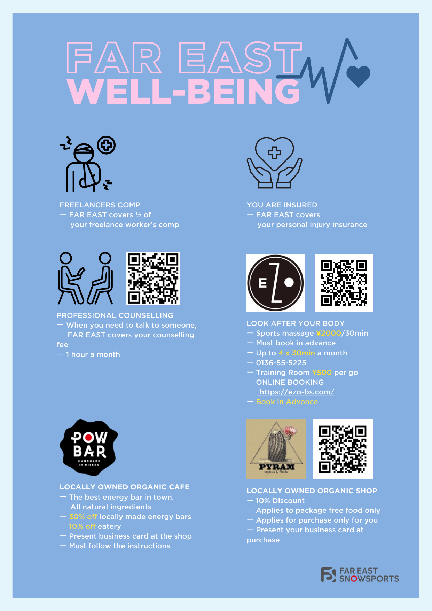
FES Well-being programme
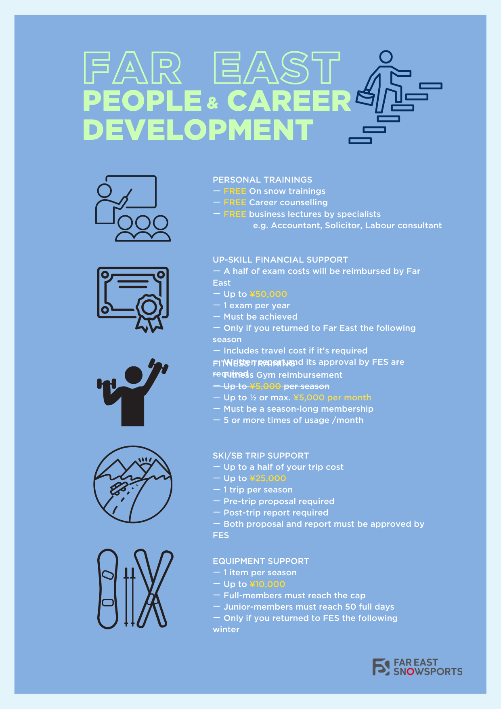
FES Career & People Development programme
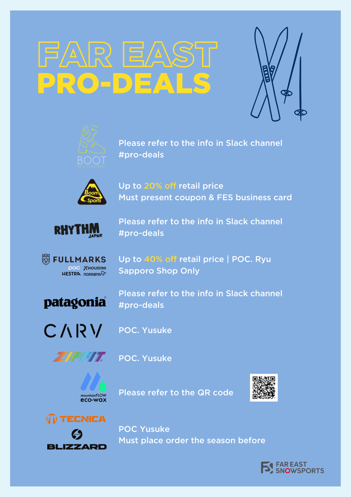
FES Pro-deals — brand partner discounts available to all members
The longer you stay, the more the support amounts grow.
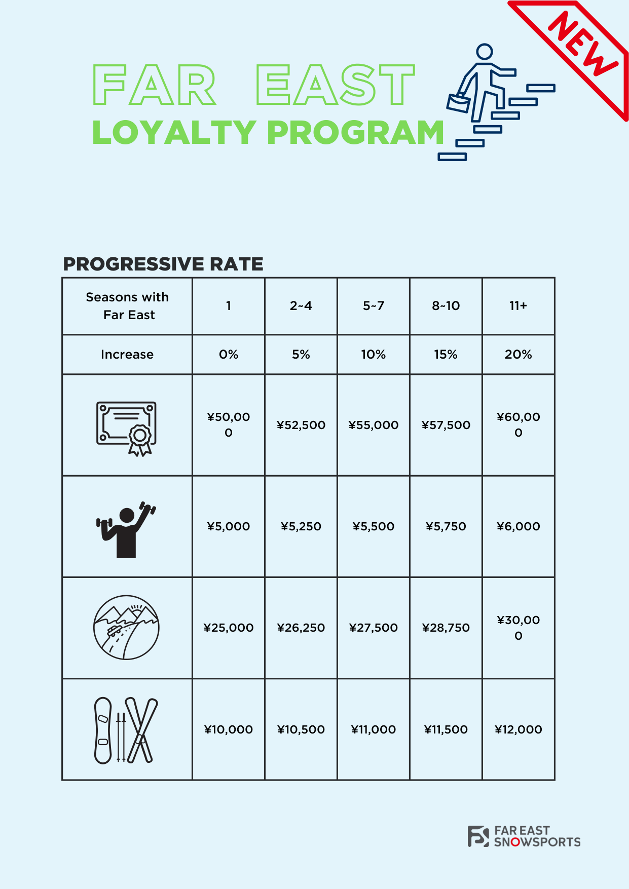
Loyalty programme — support caps increase with each season tier
Participating in FES events, workshops, and training earns points, which convert to a bonus rate on your earnings at end of season.
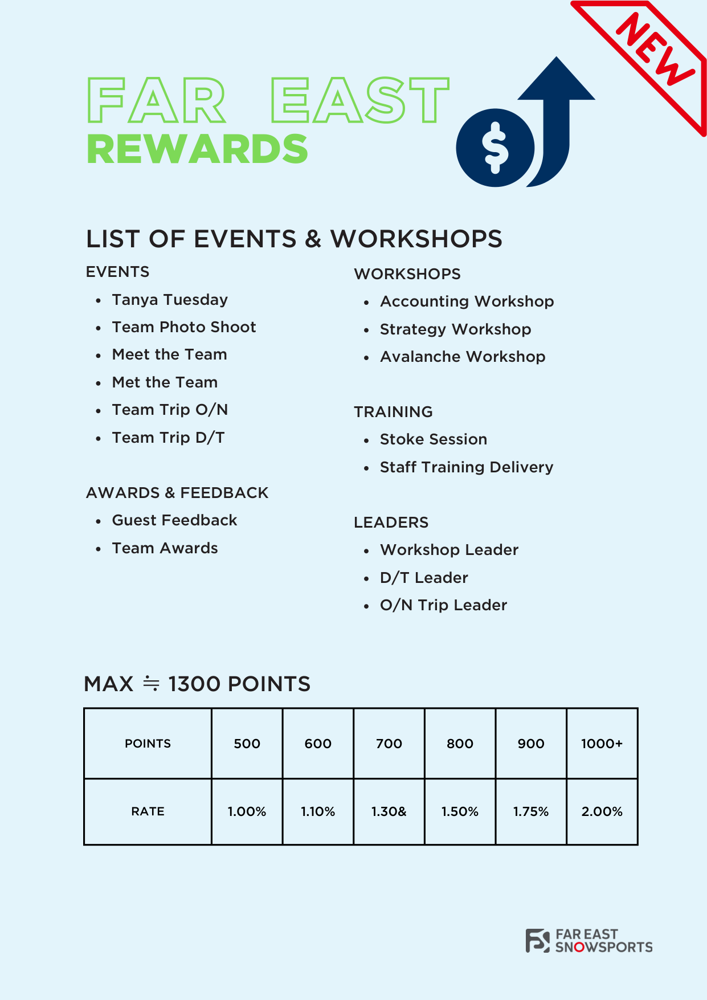
Rewards programme — points from events and workshops convert to a season-end bonus rate
Our goal in this interview is not simply to assess whether you're the right fit for FES — it's equally to help you assess whether FES is the right fit for you. We believe long-term careers only take root when a school and an instructor are genuinely aligned from both sides. For that reason, we ask as much as we share. Even if it turns out that FES and you aren't the best match for one another, we want to help you find the right place — we've spent years building relationships and knowledge across the snowsports industry, and we'd rather point you in the right direction than place you somewhere that doesn't serve your career.
The interview is a conversation, not a checklist. We explore four areas with every candidate — not to find someone who scores perfectly across all of them, but to understand how you think, how you operate, and where you want to go. Technical skiing or riding ability matters, but it is not the primary focus.
Come prepared to talk honestly about your experience, your goals, and how you'd approach the less glamorous sides of the role — admin, communication, guest management. That's where the conversation usually gets most useful for both sides.
BETA · This page is a work in progress. Some figures, policies, or details may not yet be fully accurate. Please treat it as a starting point — anything that matters to you can be clarified at your interview.